Lecture10 Physics System - Basic Concepts
物理的作用： + 物理直觉 + 动态环境，《彩六》破坏环境 + 环境交互，VR等《Alyx》 + 艺术效果，粒子、流体、布料
Physics Actors and Shapes
Actor
- Static Actor 静态固定的，不受物理影响
- Dynamic Actor 按照动力学原理运动的，受力/动量/冲量驱动
- Trigger 根据碰撞触发Message从而产生Event
- Kinematic 反物理的自发运动（游戏设计师设计的运动） > Kinematic与受物理约束的Actor碰撞时，可能会产生“飞掉”
Shape : 复杂形状物理计算过于复杂
- Sphere
- Capsule 胶囊体
- Box
- Convex Mesh 凸多面体
- Trangle Mesh （一般只用于静态）
- Height Field
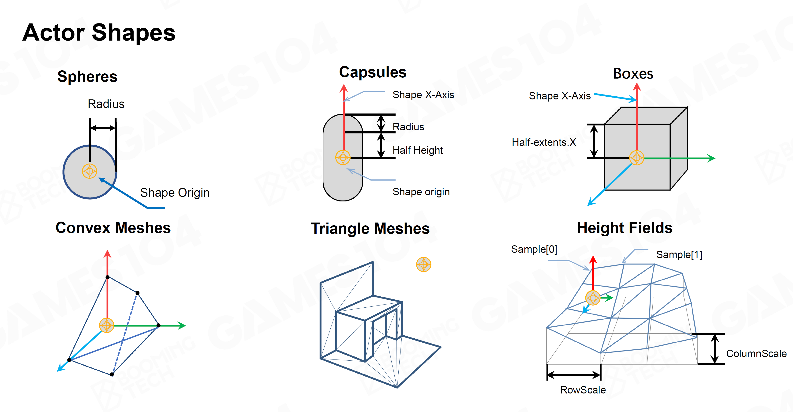
！尽量使用简单的Shape（从前到后越来越复杂）
Shape Properties
- Mass / Density 质量 / 密度
- Center of Mass 质心
- Friction / Restitution 摩擦力 / 弹力 (and more …)
Forces
- Force eg. Gravity / Drag / Friction / …
- Impulse 冲量 eg. simulating an explosion
Movements
（略，@GAMES201/103）
Rigid Body Dynamics
（略，@GAMES103）
Collision Detection
Two phase 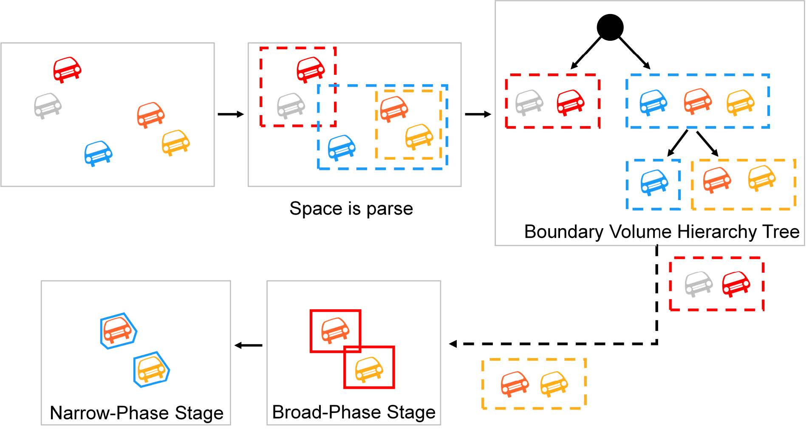
Broad Phase 方法
- Space partitioning：利用BVH查询，非常适合动态更新，但没有↓方法快
- Sort and Sweep
- 对所有Actor的AABB按
pmin或pmax的x轴、y轴排序，查询重叠 - 排序后动态更新，局部调整计算量也很低
- 对所有Actor的AABB按
Narrow Phase 方法
Basic Shape Intersection Test
- Sphere-Sphere 极易求
- Sphere-Capsule 把Capsule拆成两端球和圆柱
- Capsule-Capsule 同上
Minkowski Difference-based Methods
A形状中无穷多点坐标 + B形状中无穷多点坐标 = Minkowski Sum 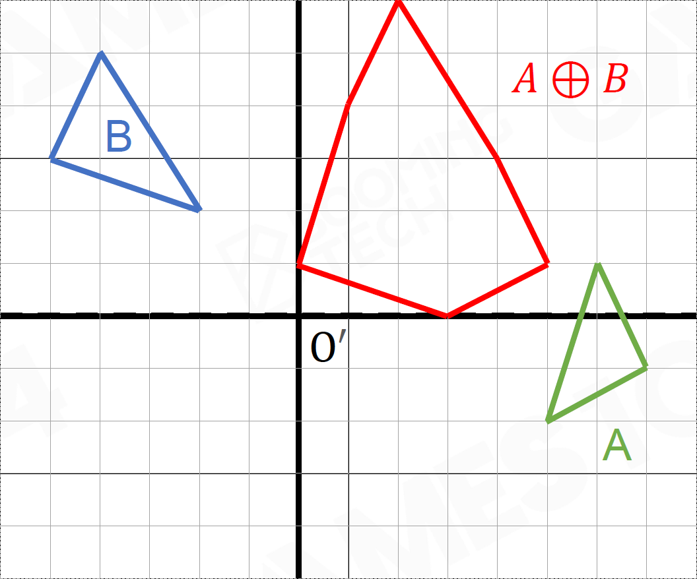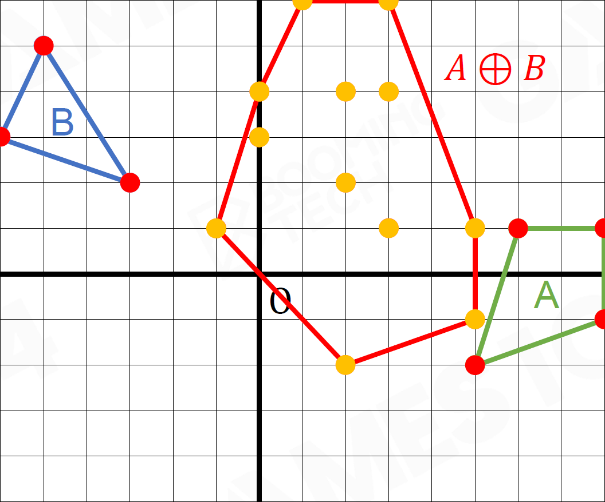 \[ A\oplus B=\{\vec a+\vec b:\vec a\in A,\vec b\in B\} \]
A形状中无穷多点坐标 - B形状中无穷多点坐标 = Minkowski Difference （将B关于原点对称得到-B，再求Minkowski Sum） 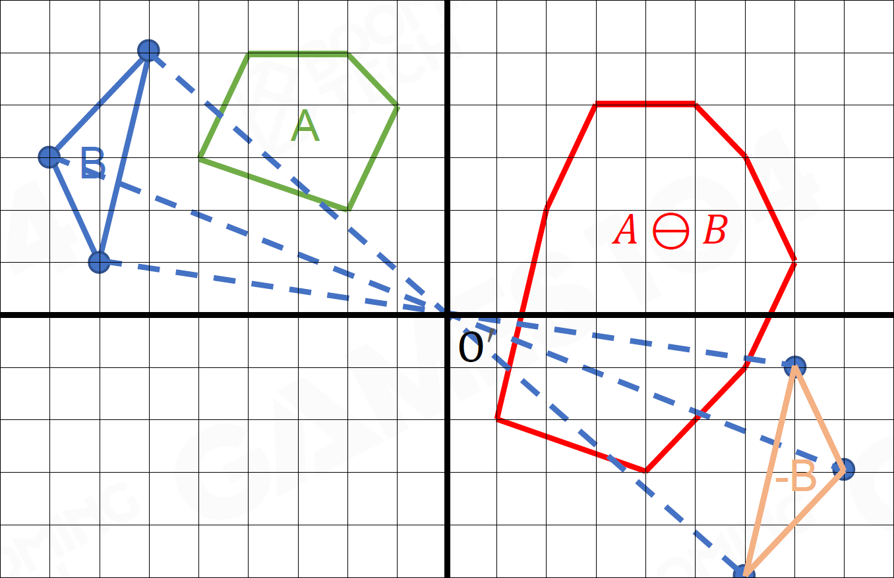 \[ A\ominus B=\{\vec a-\vec b:\vec a\in A,\vec b\in B\}\\ A\ominus B=A \oplus(-B) \]
观察：若AB有交点，则其Minkowski Difference一定过原点 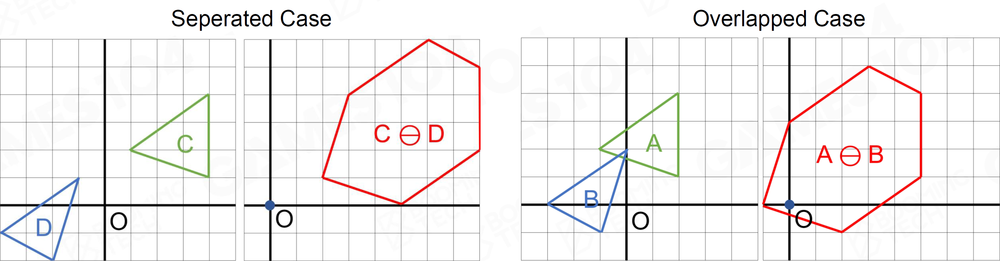
GJK Algorithm
- 分别取AB中Y轴方向最大最小的点，作差得到新的点C必为Minkowski Difference上一顶点，判断O是否在C上，若否则下一步 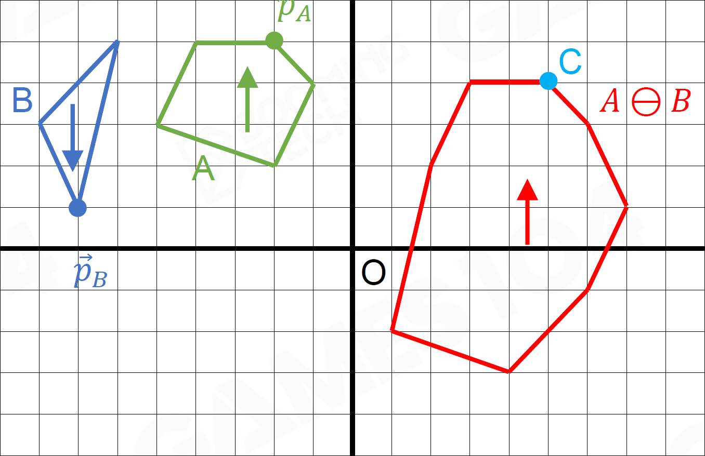
- 连接点C和原点O，以OC方向取AB中最大最小的点，作差得到点D，判断O是否在CD上，若否则下一步 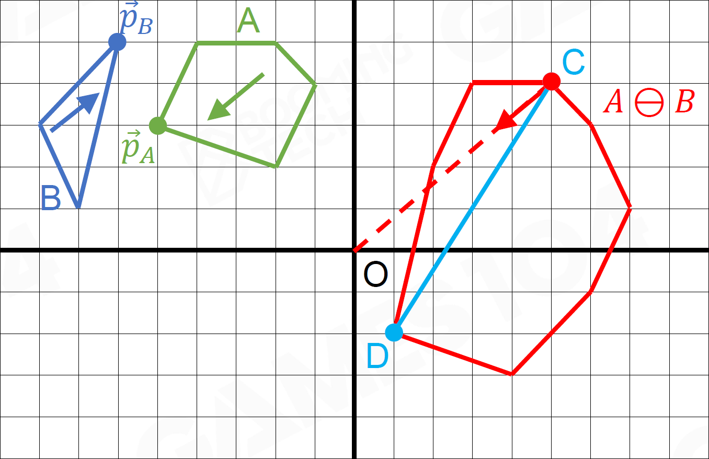
- 再作O到CD的垂线，以垂线方向取AB中最大最小的点，作差得到点E，判断O是否在CDE内，若否则下一步 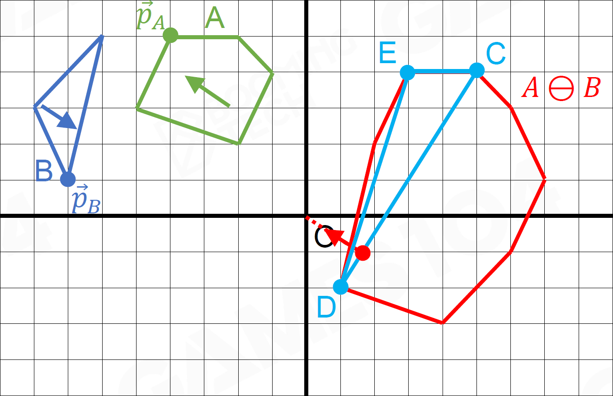
- Next 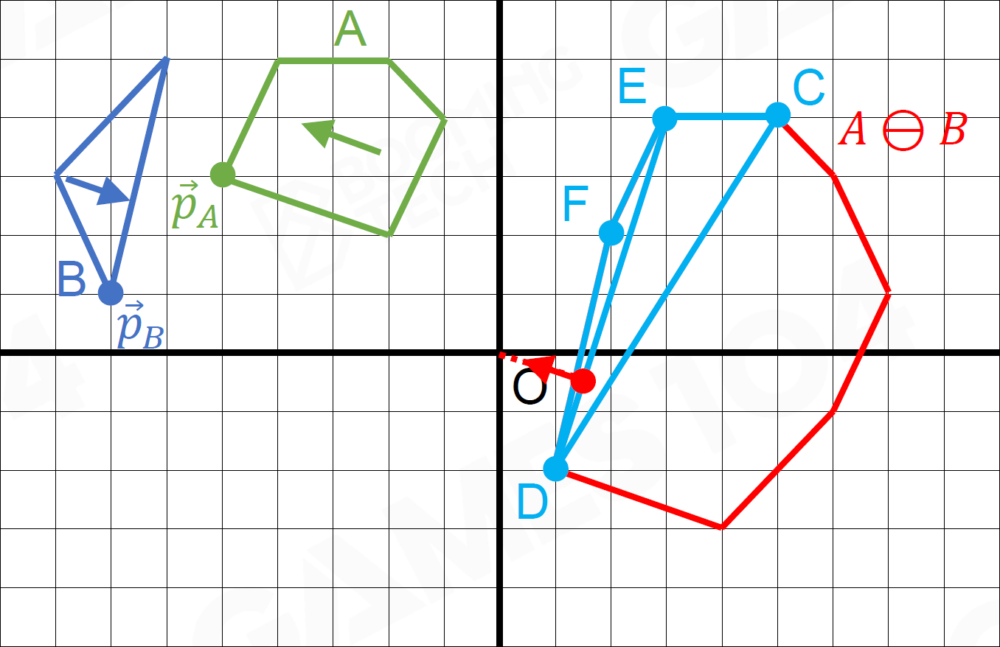
- Next 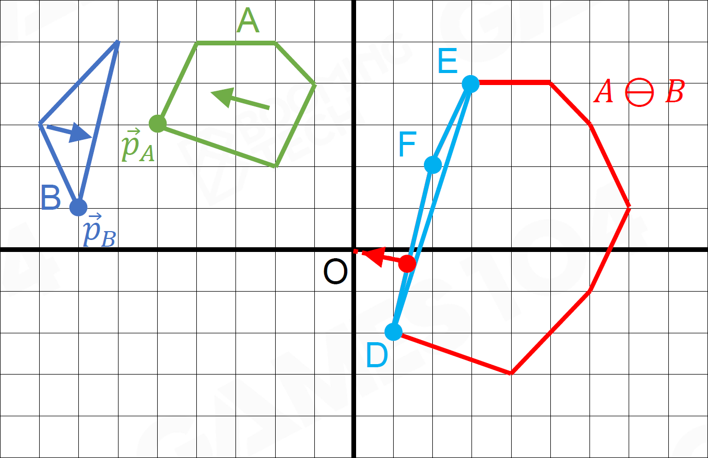
- …
Separating Axis Theorem, SAT
- 定理：对两个分离的几何体，一定能找到分离轴将两者完全分开 => 2D情况下，对凸多边形而言，其中一个几何体的一条边可作为分离轴
- 2D情形：分别遍历AB的每条边，判断另一图形是否相交。若有任一分离轴，则两者不相交；否则相交 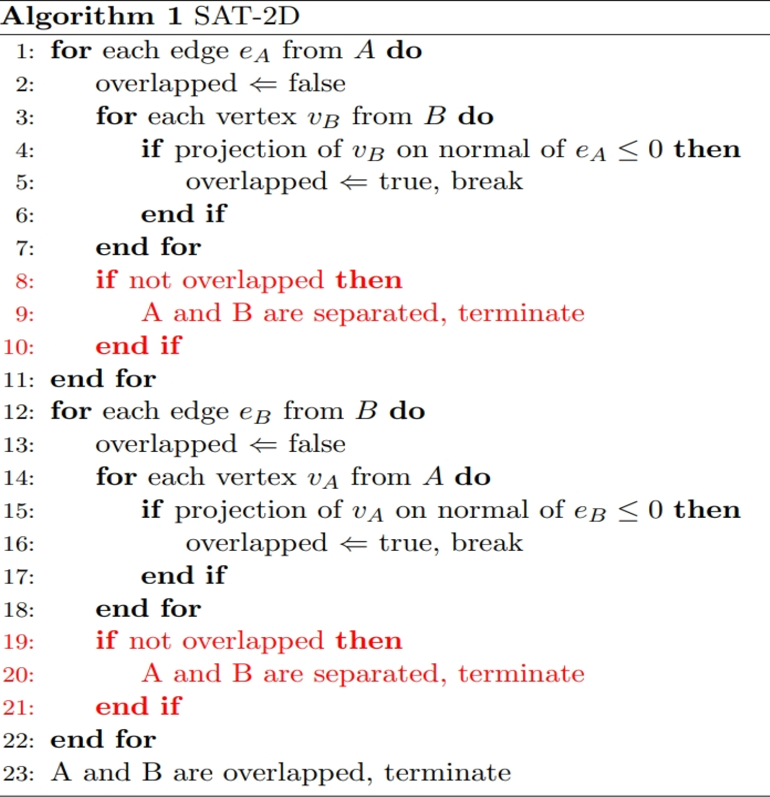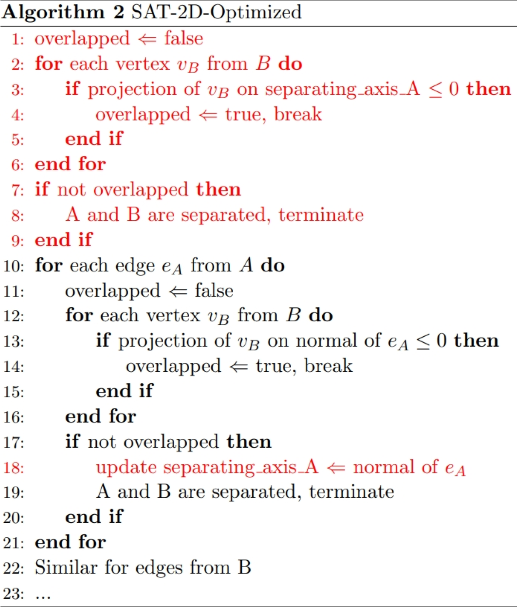
- 3D情形：遍历AB的每个面，遍历AB的任两条边的叉积构成的平面
Collision Resolution
- Penalty Force （略，@PBA）
- Constraints （略，@PBA） 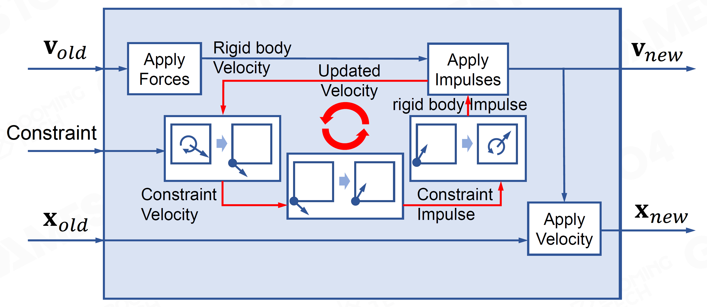
Scene Query
- Raycast
- Multiple hits 返回所有交点
- Closet hit 返回最近的交点
- Any hit 返回交点，不需要排序
- Sweep 用几何体扫描
- Overlap 重叠
Collision Group
- 对Actor分组
- Pawn / Static / Dynamic / Trigger
- 作判断时忽略无关的Actor
Efficiency, Accuracy, and Determinism
Simulation Optimization
- Island 把一个个需要模拟的单元分离
- Sleeping Island在不施加力的时候可以Sleep
Continuous Collision Detection, CCD
- 部分Actor需开启CCD
- 移动速度过快时，下一时间步直接穿过碰撞物碰撞检测失效，Tunneling隧穿
Solution：
- 加厚碰撞物
- CCD
- 一种方法：Time-of-Impact, TOI
- 评估两步之间的“安全时间”
- 以“安全时间步”迭代
- 重复直到距离在碰撞物厚度之内
Deterministic Simulation 确定性模拟
- 多人在线游戏中，各方须表现一致
- same old states + same inputs = same new states
- 时间步、算法顺序、浮点数精度等等须保持一致
- 目前很难解决，大部分在线游戏中不用物理做游戏逻辑，而只做表现效果